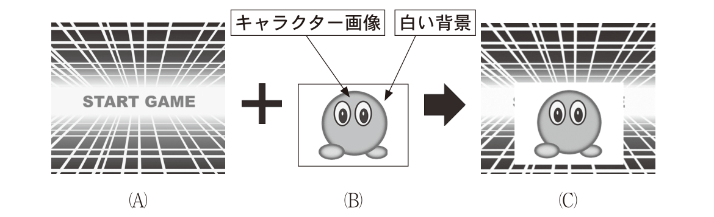
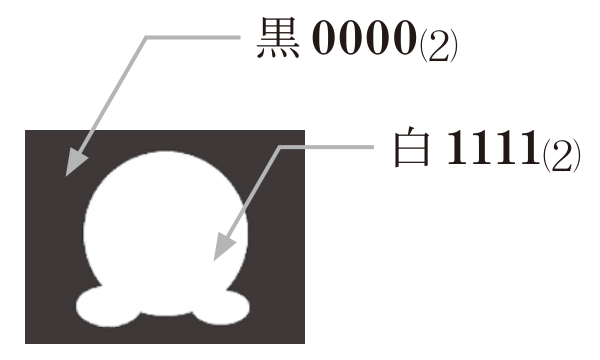
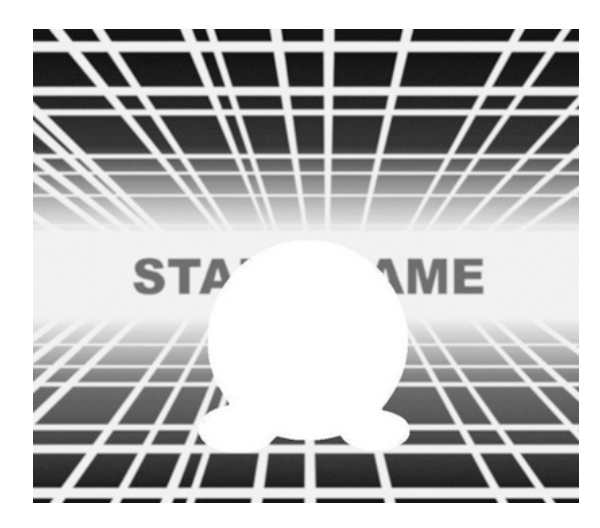
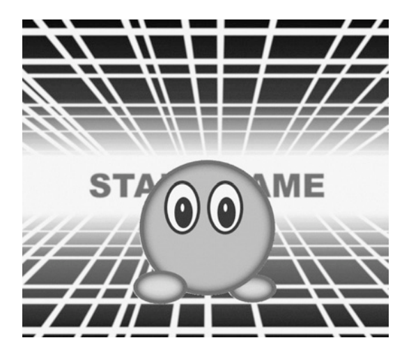
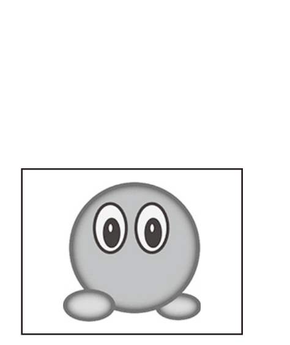
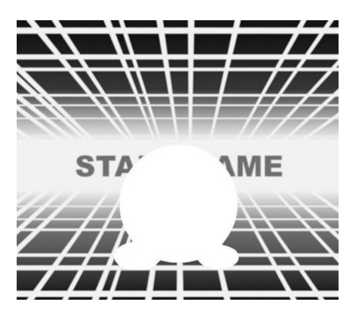
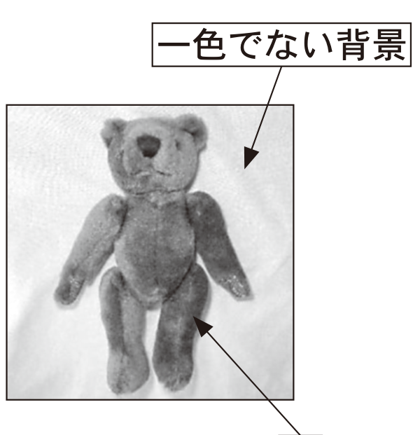
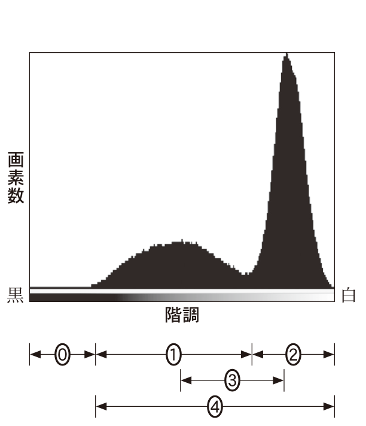
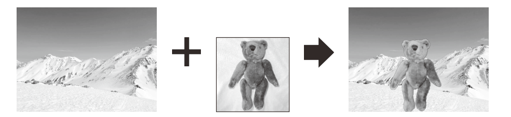
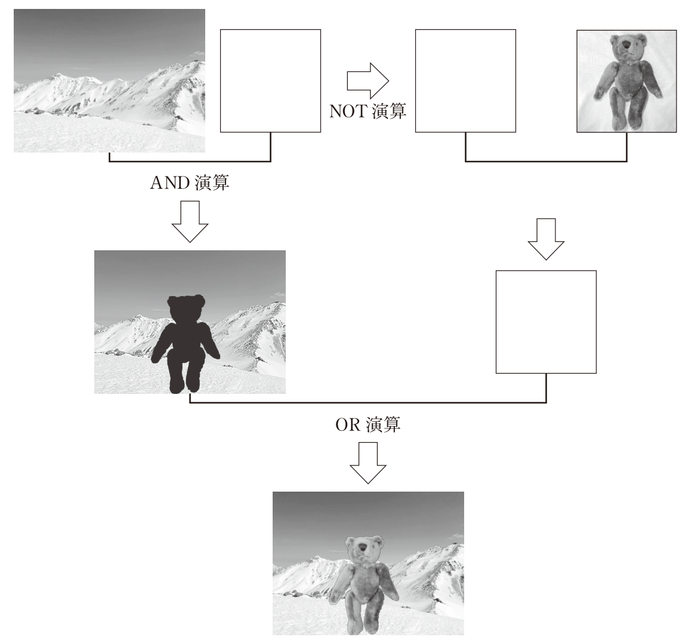

B 次の文章を読み，後の問い（問1～4）に答えよ。
ゲームの画面などは一つの画像ではなく，背景の画像やキャラクターの画像など複数の画像を組み合わせて作られている。例えば，図5(A)の画像の上に，コンピュータを使って描いた図5(B)のようなゲームのキャラクター画像をそのまま重ねると，図5(C)のように図5(B)の白い背景が表示されてしまう。

図5(B)の白い背景を透過させ，その部分に図5(A)の画像を表示させたい。これは，画像を重ね合わせ，画素単位のビット演算を組み合わせて実現することができる。ここでは1画素（点）を4ビットで表現した16階調のグレースケールとし，黒色の点の値は00002，白色の点の値は11112とする。
最初に，図5(B)のキャラクターの部分をすべて白色，透過したい部分をすべて黒色にした図6の画像を作成しておく。

次に，図5(A)の画像に図6の画像を図5(C)と同様に重ねて，(a) 重なる各点の4ビットについてビットごとにOR演算をすると図7の画像になる。さらに，(b) 図7の画像に図5(B)の画像を重ねて，重なる各点の4ビットについて，ビットごとに「ある演算」を行うと図8の画像になる。


なお，以降の問題で使用するOR 演算（論理和），AND 演算（論理積），NOT 演算（否定）の真理値表は表1のとおりである。
| x | y | x OR y |
|---|---|---|
| 0 | 0 | 0 |
| 0 | 1 | 1 |
| 1 | 0 | 1 |
| 1 | 1 | 1 |
| x | y | x AND y |
|---|---|---|
| 0 | 0 | 0 |
| 0 | 1 | 0 |
| 1 | 0 | 0 |
| 1 | 1 | 1 |
| x | NOT x |
|---|---|
| 0 | 1 |
| 1 | 0 |
問1 下線部(a)の操作について，図6の白色の点11112と重なる図5(A)の点の値が10102，図6の黒色の点00002と重なる図5(A)の点の値が01102であった場合のそれぞれについて，ビットごとにOR 演算した結果として最も適当なものを，後の解答群のうちから一つずつ選べ。
点11112と点10102とのビットごとのOR 演算結果 コ
点00002と点01102とのビットごとのOR 演算結果 サ
問2 下線部(b)「図7の画像に図5(B)の画像を重ねて，重なる各点の4ビットについて，ビットごとに「ある演算」を行うと図8の画像になる」における「ある演算」として最も適当なものを，後の解答群のうちから一つ選べ。 シ


問3 図5(B)から図6を作成するには，図5(B)の背景色（白一色）を指定して背景の領域を選択すれば容易に実現できる。しかし，図9のような背景が一色でない画像から，図10の画像を作成することは容易ではない。そこで，色の範囲を指定して，その色から成る領域を選択することができる画像編集ソフトウェアを使って背景を選択することを考える。図11は画像編集ソフトウェアで表した図9の各階調の画素数を表したヒストグラムである。なお，図9の画像は1画素を8ビットで表現した256階調のグレースケールである。図9の背景（熊以外）だけを選択するには階調のどの範囲を指定すれば良いか。最も適当なものを，図11中の⓪～④のうちから一つ選べ。 ス


問4 次の文章を読み，空欄 セ ～ チ に入れるのに最も適当なものを，後の解答群のうちから一つずつ選べ。
ポスターやパンフレットなどで，風景画像（図12左）に別の画像の一部分（図12中央の熊の部分）を切り抜いて重ねられたような合成画像（図12右）を見ることがある。

このように，画像の一部分を切り抜いて別の画像に重ねるには，背景の部分（ここでは図12中央の熊以外の部分）を透過させる必要がある。これは，図13で示した手順でビット演算を組み合わせれば実現できる。なお，ここでは，黒色の点の値は000000002，白色の点の値は111111112とする。

セソタチ